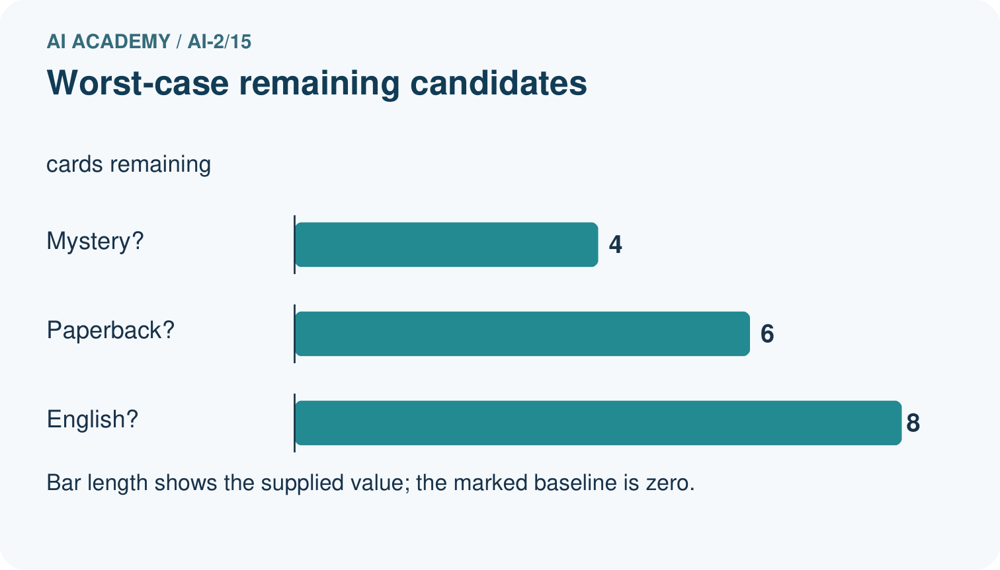
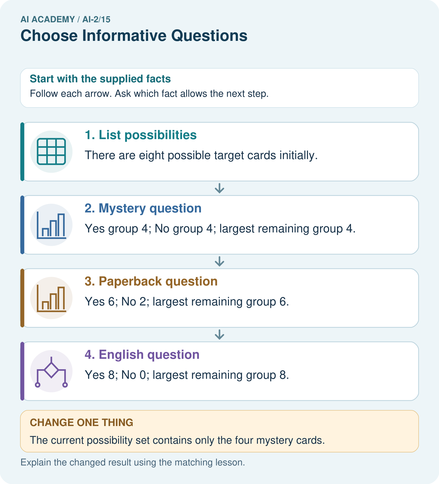
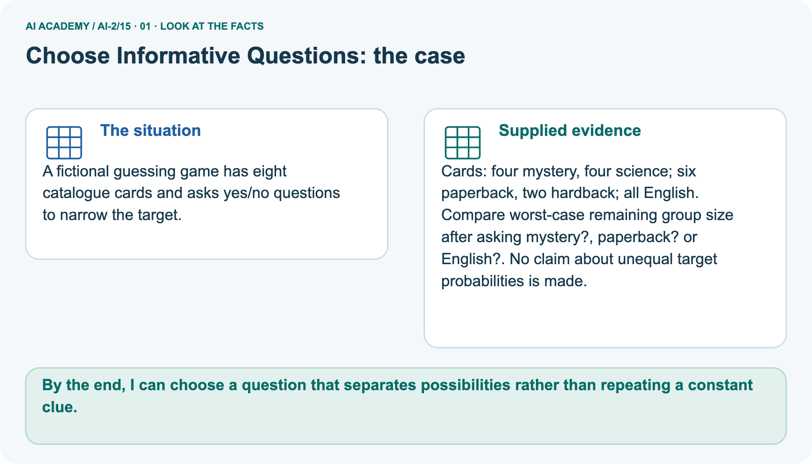
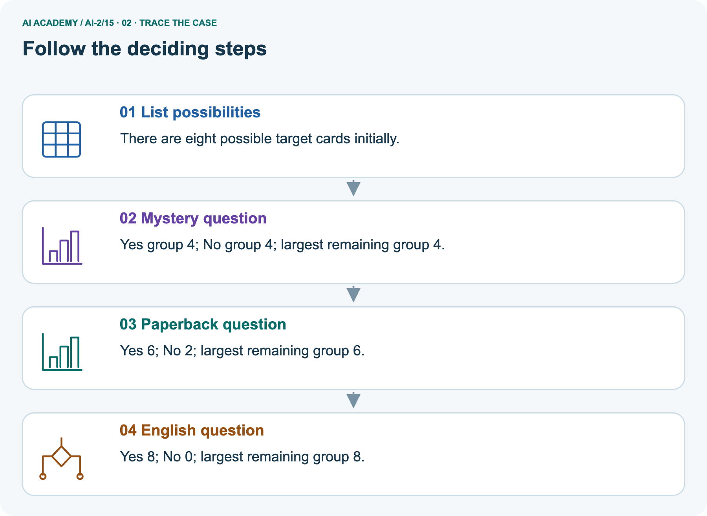
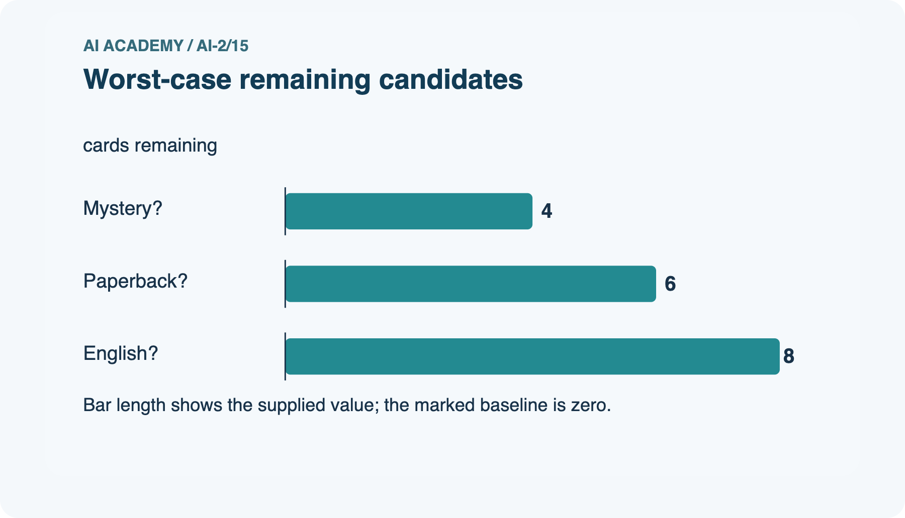
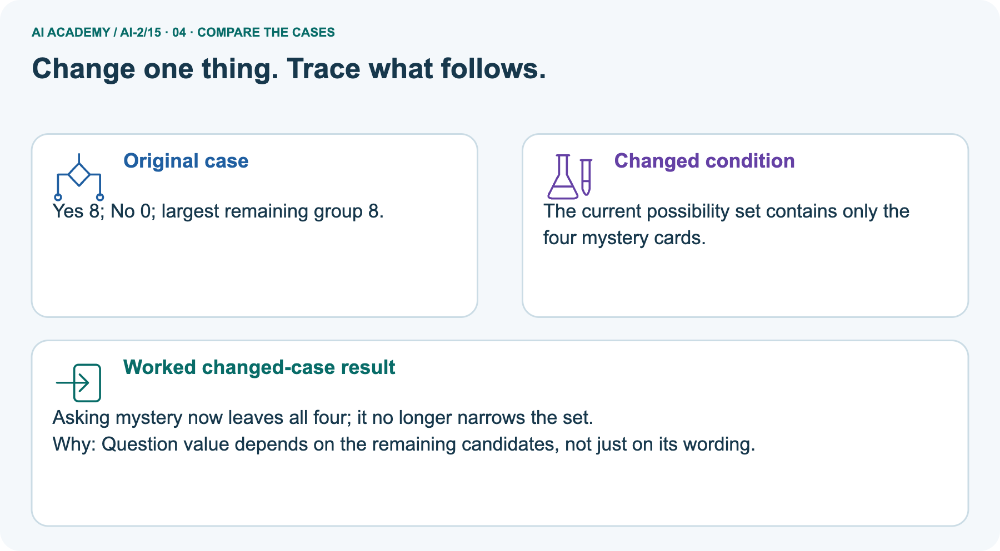
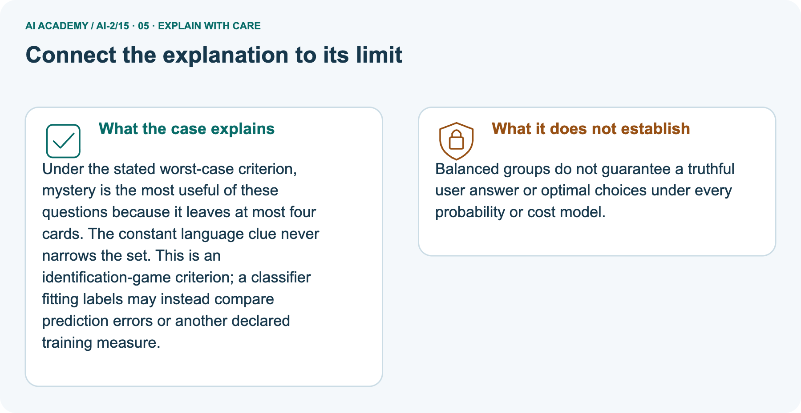
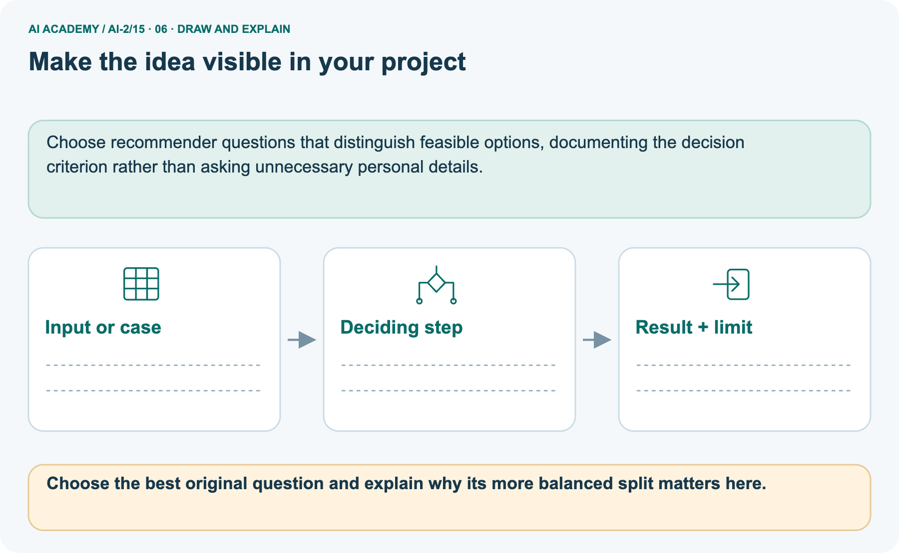

AI Academy · Level 2 · Grade 7 · Week 15 · Workbook
Choose Informative Questions
Learn to understand, design, build, test and explain AI systems responsibly.
Project: Transparent Book Recommender
Workbook · 1 of 21
Recall and choose your starting point
Record your starting explanation for Choose Informative Questions before opening notes. Show any later correction separately.
Try the recall before opening notes. Then use a different colour or a labelled second line to correct your explanation.
Decision Trees
Without opening the old lesson, explain one key idea from Decision Trees. Give an example and a mistake that the idea helps you avoid.
Accuracy as a Fraction
Without opening the old lesson, explain one key idea from Accuracy as a Fraction. Give an example and a mistake that the idea helps you avoid.
Features and Distractors
Without opening the old lesson, explain one key idea from Features and Distractors. Give an example and a mistake that the idea helps you avoid.
Workbook · 2 of 21
Practise with fading help
Complete the supported Choose Informative Questions trace and record the first step you can explain without help.
Use W2: Verify the candidate scores for Fitting a decision tree. Record the answer once; the lesson and workbook refer to the same attempt.
| Given inputs | Procedure I chose | Middle steps | Result and check |
|---|---|---|---|
Workbook · 3 of 21
Individual reasoning check
Check the proposed Choose Informative Questions explanation against the supplied facts before discussing it.
Use the worked case for Fitting a decision tree. Proposed explanation: “A near branch must predict blocked”. Decide whether this explanation is supported.
Point to the step or supplied fact that decides; explain your repair if needed.
Workbook · 4 of 21
Independent transfer case
Write one first attempt at the reserved independent case before feedback. Repeated copies of that case refer to the same recorded attempt.
Independent case: Changed independent case
Ten cards have six pet subjects and four space subjects; all are green. Compare asking “green?” with asking “pet?” to identify a card. Give the largest remaining group and one limitation.
Attempt this case before feedback. Record any help. Earlier examples below are further practice; a case already practised with feedback cannot establish fresh transfer.
Workbook · 5 of 21
Your learning target
Connect the Choose Informative Questions target to a trace and a justified conclusion.
Six cards contain three animal and three space books; all have blue covers. Compare asking 'blue cover?' with 'animal subject?'. Is the better question guaranteed to work on inaccurately tagged books?
Workbook · 6 of 21
Solve the given case
Solve the supplied Choose Informative Questions case and show the deciding evidence.
Eight blue cards contain four circles and four triangles; target is shape.
Which question is more useful: blue or circle?
Show your trace, calculation or evidence
Workbook · 7 of 21
Check a changed case
Apply the procedure to the changed case and record why the conclusion follows.
Cards are two cats and two dogs, all red. Which question helps separate species: is it red or does it bark? State your assumption.
My independent answer and reason
Week 15 Test and reflect
Workbook · 8 of 21
Design a revealing test
Specify a changed input, expected result and observation separately.
Create a changed input, boundary case or missing-information case. Write the expected answer or safe response before testing.
| Test record | My evidence |
|---|---|
| Changed input or condition | |
| Expected answer or fallback | |
| Observed result | |
| Why the result occurred |
Workbook · 9 of 21
Project checkpoint
Justify what Choose Informative Questions adds to Transparent Book Recommender and keep the evidence.
Ask first about preferences that remove the largest number of unsuitable books.
The project change and evidence I will keep
Workbook · 10 of 21
Self check
Judge explanation, evidence, transfer and limits separately; attach the work behind your judgement.
- I can explain the mechanism.
- I can show evidence.
- I can handle a changed case.
- I can name a limit.
Mark each as not yet, with help or independently, and attach supporting work.
Teacher review ____________________ Next step ____________________
Workbook · 11 of 21
Transfer practice from the original programme
Use this earlier case as transfer practice. A case already discussed with feedback is not fresh assessment evidence.
Six cards contain three animal and three space books; all have blue covers. Compare asking 'blue cover?' with 'animal subject?'. Is the better question guaranteed to work on inaccurately tagged books?
Record support used: none, hint or teacher explanation.
Workbook · 12 of 21
W1 Name the parts and decisions
Name the parts and decisions. Apply the supplied Choose Informative Questions facts and keep your reasoning.
Identify the root, its two branches, leaf predictions and depth of the worked fitted tree. Which parts were selected using training labels?
Workbook · 13 of 21
W2 Verify the candidate scores
Verify the candidate scores. Apply the supplied Choose Informative Questions facts and keep your reasoning.
For each near branch and each tall branch, count blocked and clear labels and choose a leaf. Give the total errors for each candidate question.
Workbook · 14 of 21
W3 Separate fitting from prediction
Separate fitting from prediction. Apply the supplied Choose Informative Questions facts and keep your reasoning.
A learner sees a blocked validation case with near=0 and changes that leaf to blocked before reporting the score. Explain what changed and how to report the original fitted tree fairly.
Workbook · 15 of 21
W4 Fit a new tree independently
Attempt before feedback. If this repeats the selected independent case, reuse that first attempt; otherwise keep a separate record. Fit a new tree independently. Apply the supplied Choose Informative Questions facts and keep your reasoning.
New training rows (near,tall,label) are (1,0,clear),(1,1,clear),(1,0,clear),(0,1,blocked),(0,0,blocked),(0,1,clear). Use the same candidate order and tie policies. Give both candidates’ leaves and errors, then select the tree.
Validation rows are (1,1,clear),(0,0,blocked),(0,1,clear),(1,0,blocked). List tree predictions and compare accuracy with the training-majority baseline.
Workbook · 16 of 21
W5 Audit a tie and a claim
Audit a tie and a claim. Apply the supplied Choose Informative Questions facts and keep your reasoning.
If near and tall make the same training error count, which question does this code retain and why? Does retaining that question prove it will be better on future trips?
Workbook · 17 of 21
Feedback, return check and learning record
Record the first repaired step and a different case to revisit after a delay.
| Evidence | My record |
|---|---|
| Worked alone / hint / model | |
| First step I repaired and why | |
| New case checked later; date and result | |
| What I can now explain without notes | |
| One remaining question |
Revisit this idea with your teacher after a delay. Familiarity is different from explaining and using it on a changed case.
Workbook · 18 of 21
Pictorial case practice: Choose Informative Questions
A fictional guessing game has eight catalogue cards and asks yes/no questions to narrow the target. Explain the labelled step before checking the changed condition.
A fictional guessing game has eight catalogue cards and asks yes/no questions to narrow the target.
Cards: four mystery, four science; six paperback, two hardback; all English.
Compare worst-case remaining group size after asking mystery?, paperback? or English?. No claim about unequal target probabilities is made.


Choose the best original question and explain why its more balanced split matters here.
Record the help used
Support used: alone / hint / worked example. This record is practice evidence.
Project connection: Choose recommender questions that distinguish feasible options, documenting the decision criterion rather than asking unnecessary personal details.
Workbook · 19 of 21
Project portfolio milestone
Keep this week’s input, deciding step, result and limit together in the Transparent Book Recommender record.
Project: Transparent Book Recommender
Current milestone: Test changed cases. Keep normal, boundary and failure cases; compare expected and observed results.
Choose recommender questions that distinguish feasible options, documenting the decision criterion rather than asking unnecessary personal details.
| Evidence to keep | My record |
|---|---|
| This week’s input and deciding step | |
| Prediction and actual result (or labelled paper trace) | |
| One change since the previous checkpoint and why | |
| One error or limit and the next test |
Workbook · 20 of 21
Supported practice and learning evidence
Try the supported questions before comparing with hints and feedback. Record what you repaired and the evidence you retained.
Use this supported practice once, in the browser or on paper. Keep the reserved independent assessment for a separate first attempt before teacher feedback.
A fictional guessing game has eight catalogue cards and asks yes/no questions to narrow the target.
Practice 1: explain the deciding evidence
Which labelled step matches this detail? Yes 8; No 0; largest remaining group 8.
1. List possibilities
2. Mystery question
3. Paperback question
4. English question
Hint · try first
Hint if needed: Read the steps in the pictorial case. Match the supplied detail to the stage that performs or records it.
Feedback · compare after trying
After your attempt, compare with the supported explanation: English question Yes 8; No 0; largest remaining group 8.
Under the stated worst-case criterion, mystery is the most useful of these questions because it leaves at most four cards. The constant language clue never narrows the set.
This is an identification-game criterion; a classifier fitting labels may instead compare prediction errors or another declared training measure.
Practice 2: explain the deciding evidence
Changed case · predict first
Changed-case practice: The current possibility set contains only the four mystery cards. Which conclusion is supported by the supplied facts?
1. We can decide the result without examining the changed input or the procedure.
2. Asking mystery now leaves all four; it no longer narrows the set.
3. This one example guarantees correct results for every future input.
Hint · try first
Hint if needed: Use the changed condition and the deciding step in the pictorial trace. The answer must say what follows from those facts.
Feedback · compare after trying
After your attempt, compare with the supported explanation: Asking mystery now leaves all four; it no longer narrows the set. Question value depends on the remaining candidates, not just on its wording.
Repair a missing building block
Review Decision Trees (ai-2/14). Goal: Fit a root question and leaf predictions from training examples. Short practice: Why does changing colour alone not change this tree’s prediction?.
Return to this week and explain what you changed.
Review Accuracy as a Fraction (ai-2/12). Goal: Explain why overall accuracy can hide failure on a less common class. Short practice: Why is 100% repair detection not sufficient to declare the changed classifier best?.
Return to this week and explain what you changed.
Review Features and Distractors (ai-2/9). Goal: Choose recorded properties that preserve distinctions needed for a stated task. Short practice: Does this one pair prove the classifier always ignores subject?
Explain a narrower claim.. Return to this week and explain what you changed.
Predict, run and debug
The browser lab lets you edit the supported Python examples already included in this lesson. Predict first, run, inspect the actual output or error, change one input, then run again.
Keep code, predictions, actual results and a reasoned revision together. On paper, label your result as a trace rather than an execution.
Keep your completed work
Use Download completed work in the hosted lesson to export your answers, reflections, practice feedback and code-run evidence. Open the HTML copy to read or print it.
Drafts stay in this browser when storage is available; clear drafts on a shared device.
Workbook · 21 of 21
Visual concept journey
Explain each Choose Informative Questions picture from its labels, then record a relevant limit.
01. Choose Informative Questions: the case

A fictional guessing game has eight catalogue cards and asks yes/no questions to narrow the target. Supplied facts: Cards: four mystery, four science; six paperback, two hardback; all English.
Compare worst-case remaining group size after asking mystery?, paperback? or English?. No claim about unequal target probabilities is made.
Point to the given fact that matters most. Explain why it matters.
02. Follow the deciding steps

List possibilities: There are eight possible target cards initially. → Mystery question: Yes group 4; No group 4; largest remaining group 4. → Paperback question: Yes 6; No 2; largest remaining group 6. → English question: Yes 8; No 0; largest remaining group 8.
Point to each numbered stage and explain which recorded input it uses.
03. Worst-case remaining candidates

Worst-case remaining candidates. Units: cards remaining. Mystery?: 4. Paperback?: 6. English?: 8.
Read the labels and values. Explain the relationship the model shows.
04. Change one thing. Trace what follows.

Original case: Yes 8; No 0; largest remaining group 8. Changed condition: The current possibility set contains only the four mystery cards. Expected result: Asking mystery now leaves all four; it no longer narrows the set.
Reason: Question value depends on the remaining candidates, not just on its wording.
Predict before checking the worked changed-case result. Name what changed and what the supplied facts allow you to conclude.
05. Connect the explanation to its limit

Under the stated worst-case criterion, mystery is the most useful of these questions because it leaves at most four cards. The constant language clue never narrows the set.
This is an identification-game criterion; a classifier fitting labels may instead compare prediction errors or another declared training measure.
Limit: Balanced groups do not guarantee a truthful user answer or optimal choices under every probability or cost model.
Explain the case, then point to a limit on the claim.
06. Make the idea visible in your project

Choose recommender questions that distinguish feasible options, documenting the decision criterion rather than asking unnecessary personal details. Draw your input, deciding step, result and limit.
Supported question: Choose the best original question and explain why its more balanced split matters here.
Draw your project trace and justify the deciding step using evidence.